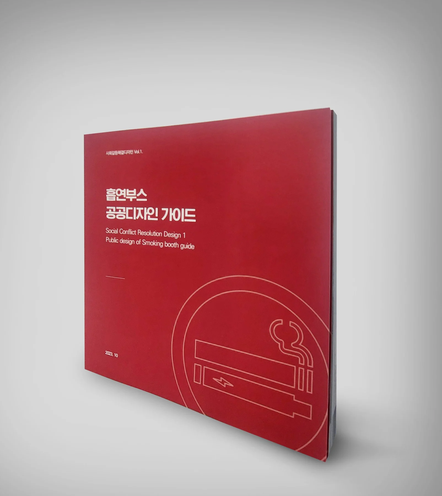
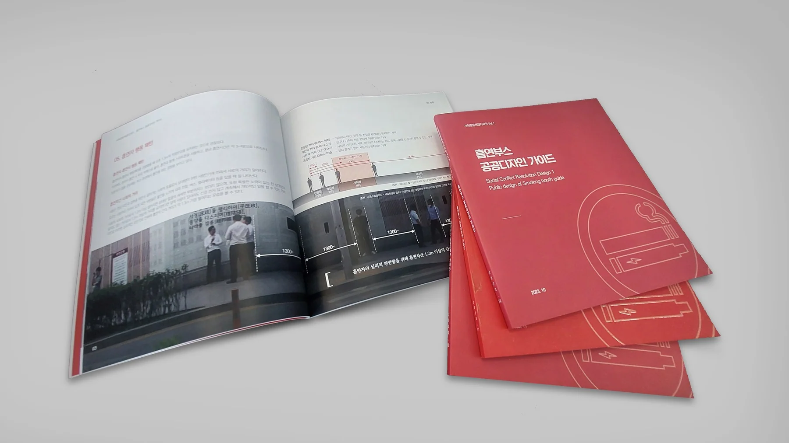
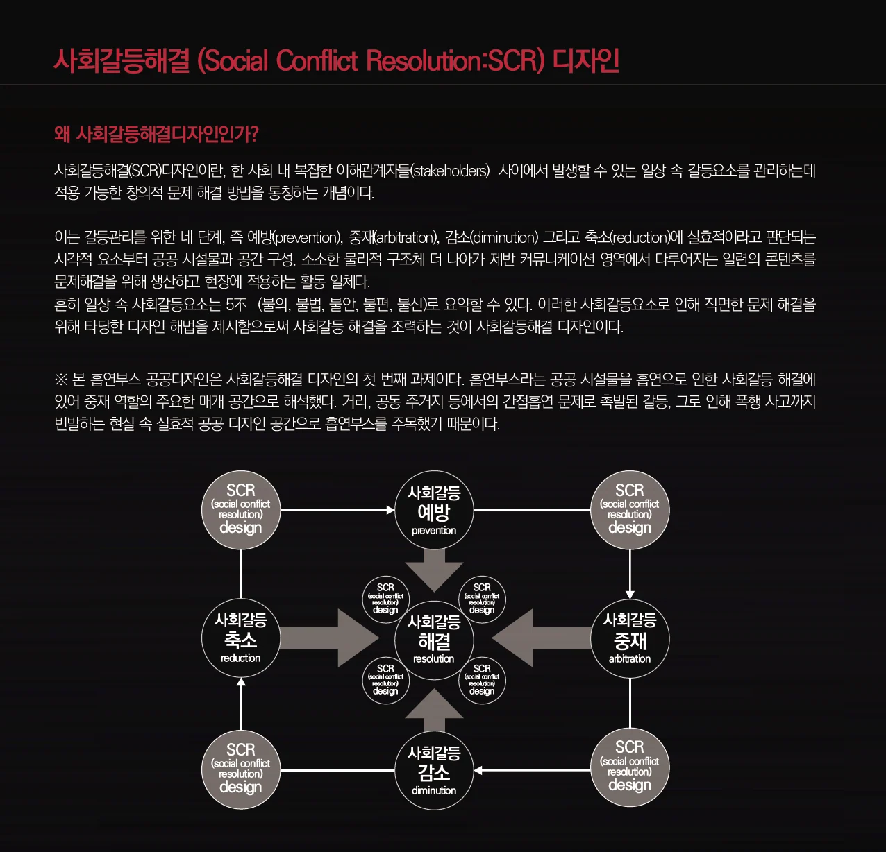
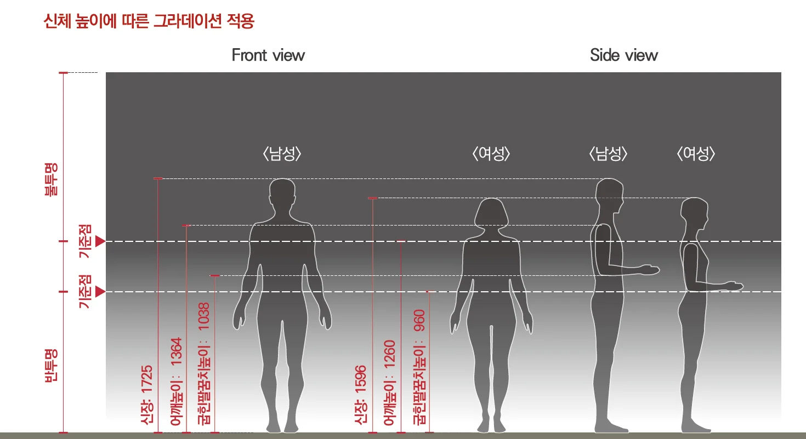
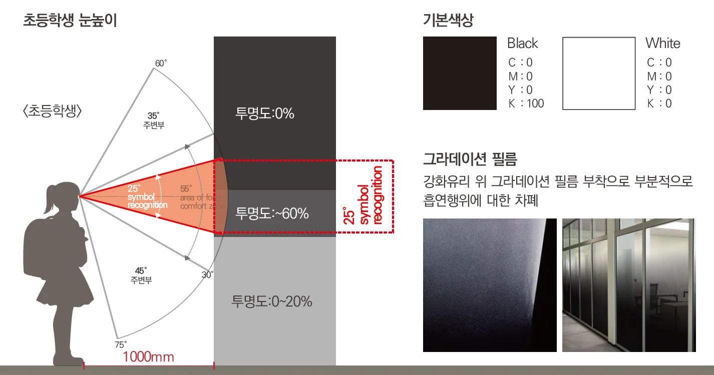
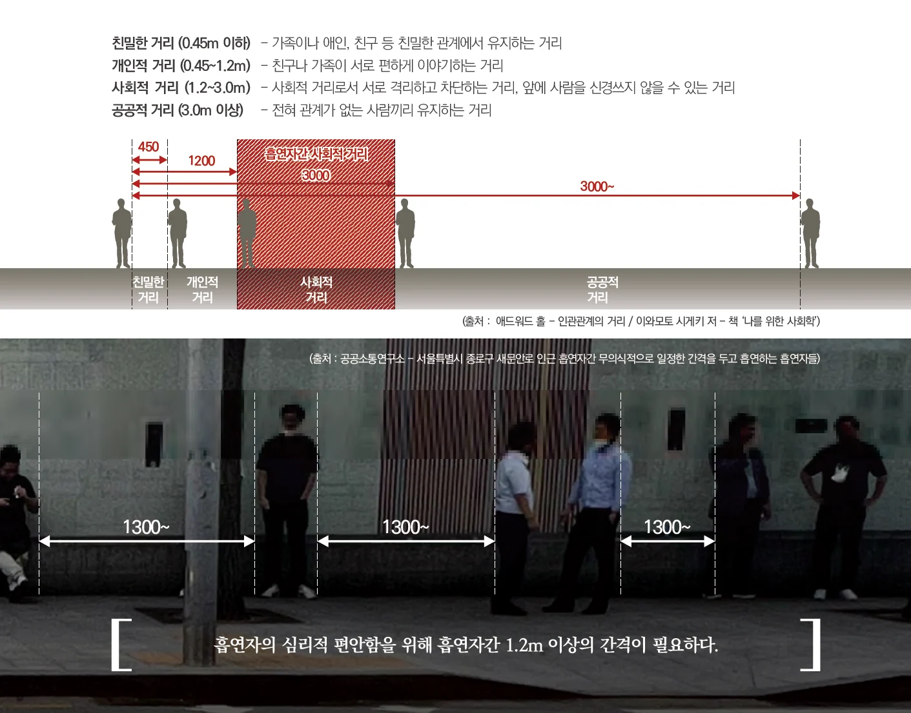

분리형 흡연부스 디자인 매뉴얼 — 홍익대학교 서면인터뷰
1. 프로젝트 배경
■ 이번 '분리형 흡연부스' 디자인 매뉴얼 개발하게 된 이유는 무엇인가요?
- 홍익대학교 공공디자인연구센터는 공공소통연구소 LOUD(www.loud.re.kr) 그리고 디자인 전문기업 에스이디자인그룹(www.se-2.com)과 함께 사회를 위한 공공디자인의 역할을 널리 알리기 위해 서로 업무 협약을 맺었습니다.
사회를 위한 공공디자인의 활동을 위해 사회갈등해결 (Social Conflict Resolution:SCR)이라는 주제를 선정하게 되었습니다. 사회갈등해결(SCR)디자인이란, 한 사회 내 복잡한 이해관계자들(stakeholders) 사이에서 발생할 수 있는 일상 속 갈등요소를 관리하는데 적용 가능한 창의적 문제 해결 방법을 통칭하는 개념입니다.
사회갈등해결디자인의 주제 하에 공동으로 연구비를 투자하여 연구를 시작하게 되었고 그 첫 번째 결과물로 ‘사회갈등해결디자인 VoL.1 흡연부스 공공디자인 가이드’를 내놓게 되었습니다.


■ 사회갈등 해결 디자인 과제로 '분리형 흡연부스'를 선정하게 된 이유는 무엇인가요?
- 조형적 심미성의 디자인이 아니라 가치적 문제해결의 수단으로써 디자인을 활용하는 목표를 가지고 공공이 가지고 있는 문제를 찾아보았고 특히 공공영역에서 다루거나 공론화하기 어려운 문제들을 찾고자 하였습니다.
우리나라에서는 2005년부터 WHO 담배규제 기본협약(FCTC)에 당사국으로 참여하고 있고 이에 따라 금연종합대책 등 국가 담배규제 정책이 추진되고 있습니다. 이러한 규제 중심의 정책 기조로 인해 공공기관에서는 금연을 얘기하긴 쉬워도 흡연과 관련한 지원시설에 대한 논의는 쉽지 않다는 것을 알고 우리 학교 연구센터와 같은 민간 디자인연구기관이 시작해야겠다는 생각을 하게 되었습니다.
우리의 공공공간을 살펴보면 거리, 공동 주거지 등에서의 간접흡연 문제로 촉발된 갈등, 그로 인해 폭행 사고까지 빈발하는 현실 속 실효적 공공공간으로 흡연공간과 부스에 대한 필요성을 느끼게 되었고 특히 궐련 담배와 전자담배의 사용자 사이에서도 일상 갈등이 생긴다는 것을 관찰하였습니다.
또한 ‘시민 호흡권 개선을 위한 흡연부스 운영방안’의 연구를 살펴보면 최근 건강과 환경에 관한 시민의 관심이 높아지면서, 간접흡연의 피해와 흡연권 보장에 대한 논의 그리고 흡연자와 비흡연자 모두 길거리 흡연구역의 조성이 필요하다는 공통된 의견을 제시하고 있습니다. 또한, 흡연구역의 지정이 흡연자의 흡연권 보장과 비흡연자의 간접흡연 피해를 방지할 수 있는 가장 좋은 방법이라는 점에 시민 대부분이 공감하고 있기 때문에 금연구역의 지정보다는 제대로 된 흡연구역의 지정을 더 중요시하고 있음을 알 수 있습니다.
이러한 조사와 분석, 관찰 등을 통해 흡연을 권장하는 것이 아닌 흡연자 외 비흡연자, 궐련 담배와 전자담배 사이의 갈등을 줄일 수 있는 것 그리고 아이들에게 흡연의 모습이 최대한 은폐될 수 있는 디자인적 지원을 사회갈등 해결 디자인의 첫 번째 과제로 선정하였습니다.

2. 디자인 매뉴얼의 주요 특징
■'분리형 흡연부스'의 4대 핵심요소인 색상, 거리, 관점, 메시지의 구체적인 내용은 무엇인가요?
- 분리형 흡연부스에 적용된 색상은 정보색채의 진출도를 강화하기 위해 배경이 되는 시설물의 색채는 무채색의 저명도를 기본으로 하고 있습니다. 눈에 제일 먼저 띄어야 할 흡연관련 정보는 산업안전보건법의 한국 산업 규격(KS A 3501) ‘안전색 및 안전표지’의 색채를 기본으로 적용하였습니다.
초등학생이 외부 반경 최대 근접 가능 거리인 1000mm거리에서 부스를 바라보았을 때, 시야각 25°내로 부스 내부의 흡연행위가 덜 노출되도록 초등학생 평균 신장인 138cm의 시야각을 고려하여 일반 성인 여성의 굽힌 팔꿈치 높이와 유사하며 해당 부분에 그라데이션 영역을 설정하였습니다. 이는 어린아이들에게 서서 흡연하는 행위에 대해 외부로의 노출을 줄이기 위해 그라데이션 강화유리를 설치한 것이며 흡연부스 내부의 흡연자에게도 심리적으로 안정감을 줄 수 있도록 한 것입니다. 일반 성인 여성을 기준으로 한 것은 20~50대 남성과 여성의 신체 치수 평균값을 비교했을 때 기준점이 더 낮은 수치가 여성이었기 때문입니다.


또한, 내부에서 흡연하는 분들이 협소감으로 인해 밖으로 나가서 흡연하는 것을 최대한 방지하고자 내부 공간을 디자인하였습니다. 흡연할 때 심리적인 요인과 다른 요인들로 적정 반경(1.2m 이상)을 유지한다는 것과 주로 벽면 주위에 인접하고, 흡연과 동시에 스마트폰을 사용한다는 점에 착안하여, 흡연실 면적을 반경 1.2m이상으로 분할, 배치하는 것으로 인원수를 산정하였습니다.

메시지의 경우 우리나라에서 아직 공식적으로 사용되지 않는 전자담배와 일반 담배의 분리를 인식시켜주는 픽토그램을 디자인하고 텍스트보다 이미지와 색채의 인식률이 빠르다는 것에 착안하여 디자인 구상의 기본 방향을 설정하였습니다.
메시지의 전달은 금지나 규제의 형식이 아닌 넛지(Nudge)의 개념을 기반으로 하는 유도와 권장의 형식으로 담고 있습니다. 흡연 부스 내 금연 및 담배 성분 표기 등 공익적 메시지 전달로 흡연자 금연 의식을 높이고 흡연부스 내 금연상담 유도 메시지를 연계하고 있습니다.
정보디자인의 시인성을 위해 기호를 인식하기 가장 적합한 30°영역을 주요 표기영역으로 지정하고, 대상을 편하게 인지할 수 있는 55°영역 내로 모든 요소가 표기될 수 있도록 하였습니다. 또한 읽기쉬운(Legible) 디자인 적용을 위해 흡연구역의 위치를 흡연자들이 인지할 수 있도록 흡연구역 주변 주요 절점부에서 거리 및 방향을 표기하여 흡연구역으로 유도하도록 하였습니다.
■흡연자-비흡연자 구분 및 차단을 위해 적용된 구체적인 디자인 요소들은 무엇인가요?
(위의 답변과 동일)
다른 부분보다 초등학생들의 흡연공간에 대한 시각적 차폐를 우선시 하였습니다. 초등학생이 외부 반경 최대 근접 가능거리인 1000mm거리에서 부스를 바라보았을 때, 시야각 25°내로 부스 내부의 흡연행위가 덜 노출되도록 초등학생 평균 신장인 138cm의 시야각을 고려하여 일반 성인 여성의 굽힌 팔꿈치 높이와 유사하며 해당 부분에 그라데이션 영역을 설정하였습니다. 이는 어린아이들에게 서서 흡연하는 행위에 대해 외부로의 노출을 줄이기 위해 그라데이션 강화유리를 설치한것이며 흡연부스 내부의 흡연자에게도 심리적으로 안정감을 줄 수 있도록 한 것입니다. 일반 성인 여성을 기준으로 한 것은 20~50대 남성과 여성의 신체 치수 평균값을 비교했을 때 기준점이 더 낮은 수치가 여성이었기 때문입니다.
■일반담배와 전자담배 구역을 구분하는 디자인의 필요성과 그 방법에 대해 설명해 주시겠어요?
이번 분리형 담배부스는 그간 구분의 개념이 없었던 일반담배와 전자담배의 사용자들간의 갈등을 사전에 예방하고자 처음 시도되는 공공디자인이라는 점에 의미가 있고 무엇보다 공공디자인이 우리 일상 속 실질적인 부분에 적용되어 느낄 수 있게 된 사례라는것에 의미가 있습니다.
본 연구를 위한 조사에서 일반담배의 연기에 대한 불쾌감이 담배 혼용자(전자+일반담배)의 경우 80%로 나타나 전자 흡연자들 역시 일반담배의 냄새에 대해 많은 불쾌감을 느끼고 있다는 것을 알 수 있었는데 사회적 갈등으로 나타나기 전에 사전에 디자인을 통해서 예방하여 ‘디자인’의 사회적 역할과 필요성에 대해 함께 공유할 수 있는 또 하나의 계기가 될 것으로 보입니다. 사실 이는 앞으로 디자인을 전공하는 많은 디자이너들에게도 시사하는 바가 있을 것으로 보입니다.
이번 프로젝트에서는 넛지 효과를 기반으로 하는 새로운 픽토그램 정보디자인의 적용과 사용자 행태를 기반으로 한 8가지의 흡연부스의 유형을 제시하고 있습니다.
일반담배와 전자담배 흡연공간의 분리구분을 통한 흡연자 간의 간접흡연 갈등 예방, 흡연구역과 전자담배 흡연구역을 서로 다른 출입구를 통해 출입할 수 있도록 디자인, 흡연유형을 구분할 수 있는 픽토그램, 일반담배와 전자담배 흡연공간을 구분하기 위한 픽토그램 및 웨이파인딩 디자인, 실외 흡연 방지하기 위한 이동을 유도하는 안내사인 정보디자인, 자연환기를 위한 지붕면 개방디자인 등이 이러한 문제를 예방하기 위한 디자인으로 적용되었습니다.
3. 사회적 영향과 기대 효과
■이 매뉴얼이 흡연자와 비흡연자 간의 갈등 해결에 어떤 영향을 미칠 것으로 기대되나요?
- 흡연자와 비흡연자 모두 일반담배와 전자담배에의 냄새로 인한 불쾌감의 인식조사 결과 일반담배가 냄새로 인한 불쾌감이 가장 높은 것으로 나타났으며, 흡연구역 현장에서 전자담배의 경우 비교적 담배연기에서 냄새가 아닌 향이 나오며, 이로 인해 전자담배 흡연자들이 일반 담배에서 나오는 연기의 냄새를 불쾌해하고 기피하는 현상으로 흡연구역 내부가 아닌 일반 담배흡연자들과 거리를 두고 흡연을 하는 전자담배를 흡연하는 모습이 나타납니다. 일반담배, 전자담배 둘 모두 흡연자이나, 이들 사이에서도 담배의 유형에 따라 거부감을 가지는 사회갈등도 나타나고 있는 현실에서 이를 인식하고 해결책을 고민하는 것은 선진사회가 지향해야 할 바람직한 모습이라고 봅니다.
사실 디자인이 모든 것을 해결한다기보다 문제를 찾고 정의내리고 이를 줄여나가는 다양한 방법을 제시하여 사회적으로 인식하고 공유하는 것에 큰 의미가 있다고 봅니다.
건널목 대기하는 분들의 불편을 줄이기 위한 건널목 폭염방지 그늘막, 지하철 임산부 핑크색 좌석, 스쿨존의 옐로 카펫 등 모두가 같은 관점에서 만들어진 공공디자인 사례입니다. 이번 사회갈등 해결 디자인 과제로 '분리형 흡연부스'는 흡연자, 금연자 누구에게도 어떠한 금지나 강요를 요구하지 않지만, 이것에 대해 고민하게 하고 배려해야 한다는 공감의 의식을 불러일으키기엔 충분하고 이런 것이 새로운 사회를 위한 디자인의 역할이라고 봅니다. 지금도 많은 기관과 매체에서 관심을 가지고 연락을 하시는 것도 사회적으로 적절한 이슈를 우리 디자인이 찾아서 해결해보고자 하는 것에 대한 공감이라고 보고 있습니다.
올해 대한민국 공공디자인 페스티벌에 본 분리형 부스가 시범설치되는데 그때 실증을 통해 실제 설치 전후의 흡연자들의 행태와 만족도에 대해 조사할 예정입니다.
■이번 매뉴얼이 기존 흡연부스 디자인과 차별화되는 점은 무엇인가요?
- 공공디자인의 가장 큰 매력은 기존의 기능적 시설을 사회적으로 공공가치를 지니는 시설물로 바꿔놓는 마법과 같은 역할을 한다는 것입니다. 기능성, 경제성과 심미성에 초점이 맞춰진 디자인에 안전, 배려, 편의라는 사용자 중심의 공공가치로 초점을 맞춰 바라보면 우리 사회에 더욱 적합하고 필요한 디자인이 나타납니다. 건널목의 폭염방지 그늘막과 스몸비 신호등, 어르신 무단횡단 예방을 위한 장수의자, 스쿨존의 옐로우 카펫, 고속도로 갈림길의 세이프트 레인 등이 그러한 사례라고 볼 수 있습니다.
이번 분리형 흡연부스는 기존 단순 담배를 피우는 물리적 공간을 만들어 준 기능적 시설을 흡연자의 심적 편안과 어린이나 비흡연자들과의 분리 그리고 암묵적으로 넘어가고 있는 전자담배와 일반담배 흡연자 사이의 잠재적 갈등을 사전에 예방하는 사용자 배려의 공공가치를 구현하고자 하는 디자인으로 새롭게 제공하는 것에 있습니다.
■분리형 흡연부스가 간접흡연 피해를 줄이는데 어떻게 기여할 것으로 예상되나요?
- 본 디자인의 기본 방향은 심리와 행동을 유도하는 어포던스(Affordance)디자인의 개념을 기반으로 하는 넛지효과에 있습니다. 제도와 규제로 행해야 할 간접흡연에 대한 실행이 있듯이 디자인을 통해 행동을 자연스럽게 유도하여 흡연자와 비흡연자 그리고 전자담배와 일반담배 사용 간에 분리하여 서로 간의 권리를 지켜주며 피해를 최소화하는 데 디자인이 일조할 것입니다. 이러한 새로운 디자인 제시를 통한 공공소통과 캠페인의 확장은 인식을 개선하는 하나의 사회문화로도 발전할 수 있을 것입니다.
4. 실제 적용 사례 및 향후 계획
■성동구청에서 '스마트 흡연부스' 도입 후 분리형 흡연부스를 적용할 예정이라는데, 이에 대한 구체적인 계획이나 기대 효과는 무엇인가요?
성동구의 계획은 자세히 모르겠습니다만 공공영역에서 ‘스마트 흡연부스’라는 명칭은 자칫 흡연을 긍정적으로 인식게 하거나 유도하는 용어로 이해될 수 있어 수정이 필요해 보입니다.
■다른 지자체나 공공기관에서도 이 매뉴얼을 채택할 계획이 있을까요?
- 2024년 10월에 열리는 대한민국 공공디자인페스티벌에 사회갈등 해결 디자인 '분리형 흡연부스‘가 메인전시인 ’공공디자인 실험실‘중 하나로 선정되었습니다. 시범 설치가 될 예정에 있으며 현재 양주시청내 흡연공간과 한국도로공사의 휴게소에 시범 설치하기 위해 협의 중에 있습니다.
5. 공공디자인의 미래 방향성
■앞으로 공공디자인연구센터에서 추진할 사회적 갈등 해결 디자인 프로젝트는 무엇이 있을까요?
- 우리학교 공공디자인 연구센터는 우리나라의 공공디자인의 새로운 방향을 제시하는 역할을 많이 해오고 있습니다. 중학교 공공디자인 교과서, 서울시의 사회문제해결디자인계획, 문화체육관광부의 공공디자인 기획전시의 총괄을 담당하는 등 디자인을 통한 사회문제해결과 공공가치 창출에 공헌하고 있습니다. 현재 첫 번째 시리즈에 이어 ‘보행공간의 퍼스널모빌리티 사용자와 보행자간의 갈등예방 디자인’, ‘반려인과 비반려인 사이의 갈등예방’등을 후속으로 기획하고 추진 중에 있습니다.
■이번 프로젝트를 통해 얻은 교훈이나 향후 발전 방향에 대한 생각은 무엇인가요?
우리가 알고 있는 일반적 디자인은 ‘미적’가치에 있습니다만 디자인은 경영이나 사회문제, 복지 등 상당한 분야에서 ‘전략’가치로서 활용되고 있습니다. 또 이러한 디자인의 전략적 확장은 디자인의 필요성 증대로 이어집니다. 현재 우리나라는 세계최초로 공공디자인이라는 법제 체계를 갖추고 이를 정책적으로 확산시키고 있습니다. 디자인이 공공가치를 구현하는 제도적 근거도 마련되고 다양한 사례들이 발현되는 이 시점에 사회갈등을 해결하고자 하는 디자인의 한 사례가 나오고 이에 대한 다양한 반응이 나오는 것을 보고 앞으로의 디자인 혁신은 사회의 문제를 해결하는 전략적 디자인에 있다는 것을 직접 느끼게 되었습니다.
이에 따라 우리 공공디자인 전공 연구생과 공공디자인 연구센터는 공공가치를 구현하기 위해 더 많은 사회, 경제, 문화 전문기관과의 협력을 만들고 이를 통해 디자인의 다양한 모델을 연구하고 직접 이를 사회에 실천하고자 합니다. 참고
홍익대학교 공공디자인 블로그 https://blog.naver.com/hipdcenter
홍익대학교 공공디자인 페이스북 https://www.facebook.com/hongikpublicdesign
사회갈등예방 흡연부스 공공디자인 가이드 다운로드 https://www.designdb.com/?menuno=790&bbsno=31282&siteno=15&act=view&ztag=rO0ABXQAOTxjYWxsIHR5cGU9ImJvYXJkIiBubz0iNTkxIiBza2luPSJwaG90b19iYnNfMjAxOSI%2BPC9jYWxsPg%3D%3D#gsc.tab=0